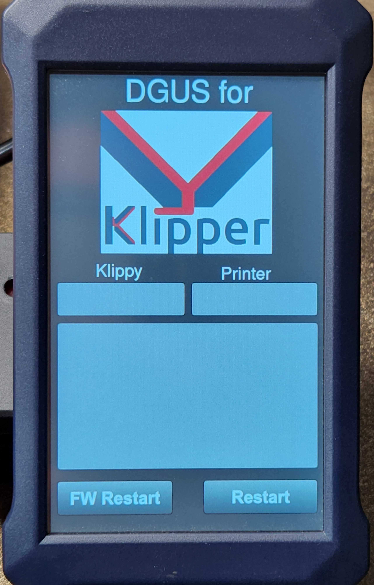

Display show empty Startup Page
If display just shows startup mask, without any other contents
{kind=link}
this could be caused through different problems:
Moonraker is not reachable (misconfigured printer ip)
Serial Interface not connected properly (rx tx toggle)
Wrong serial interface choosen.
Please read the following section and follow the instructions to get an idea what the actual problem is.
Check Moonraker Connection
You can see if the connection to Moonraker was established successfully in the default logging outputs of the klipper_dgus systemd service.
Restart klipper_dgus service
systemctl restart klipper_dgus
Wait arround 20 seconds
To print out the logs of klipper_dgus service use the following command:
journalctl -u klipper_dgus
Hint
You can scroll up and down through the messages using the Up/Down Arrow on your keyboard.
Leave the view by pressing q
You should see a message like this:
... Oct 05 21:04:04 mainsailos python3[20714]: 2022-10-05 09:04:04 : INFO : moonraker.websocket_interface : ws_on_open : Connection to Moonraker websocket established.. ...
Hint
For the most configurations setting the ip parameter should be set to 127.0.0.1 in websocket.json Set this parameter only to the ip-address of the klipper hostmachine (Raspberry PI) if you haven’t connected directly to klipper hostmachine.
Check if you used correct serial interface
Disconnect the USB-TTL from the USB port.
show all serial interfaces
ls -la /dev/serial/by-id
or
ls -la /dev/serial/by-path
or
ls -la /dev/ttyU*
Connect the USB-TTL
repeat command to list existing serial interfaces
a new entry should have been shown.
If not execute
dmesg
and check kernel output messages when you connected the USB TTL the should be in the last few printed lines.
Serial interface not connected properly
It could be that RX and TX must be switched. Unfortunately there a some USB-TTL where the RX/TX prins are labled correctly.
You can use following procedure to check if your RX/TX lines need be switched:
Enable logging for the serial data exchange.
open logging.json file (can be found in dgus_display folder using the web-ui)
locate the following section
"dgus.display.communication.communication_interface": { "handlers": [ "console1" ], "propagate": false, "level": "WARN" },
set “level” to “INFO”
"dgus.display.communication.communication_interface": { "handlers": [ "console1" ], "propagate": false, "level": "INFO" },
save the file
restart klipper_dgus service
systemctl restart klipper_dgus
view the log outputs
journalctl -u klipper_dgus
When you could find entries in the log that contain “Received response for…” the your serial connected interface correct.
Oct 05 21:14:19 mainsailos python3[21068]: 2022-10-05 09:14:19 : INFO : dgus.display.communication.communication_interface : _do_serial_communication : Sending Request 'DataVariable - Write Data - Address: 0x2030' Oct 05 21:14:19 mainsailos python3[21068]: 2022-10-05 09:14:19 : INFO : dgus.display.communication.communication_interface : _do_serial_communication : Received response for 'DataVariable - Write Data - Address: 0x2030'
If you you just see “Sending Request ..” the you have to switch RX and TX pin. Then check the logs again.
Repeat step 1 but disable logging by setting by setting level back to WARN
restart klipper_dgus service
systemctl restart klipper_dgus